|
 |
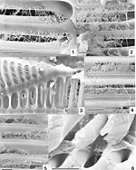
{kind=link}
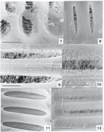
{kind=link}
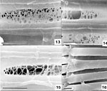
{kind=link}
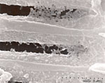
{kind=link}
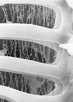
{kind=link}
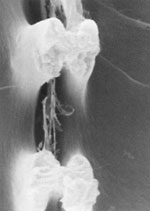
{kind=link}
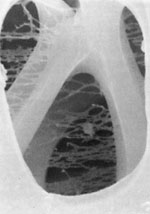
{kind=link}
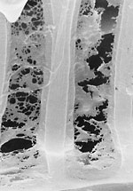
{kind=link}
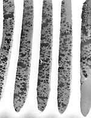
{kind=link}
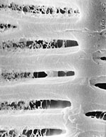
{kind=link}
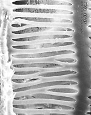
{kind=link}
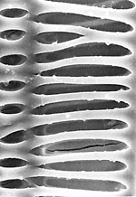
{kind=link}
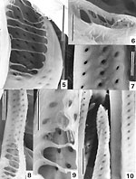
{kind=link}
FERN AND MONOCOT XYLEM
I would not have thought about working on fern and monocot xylem, except that an opportunity presented itself. Edward L. Schneider, director of Santa Barbara Botanic Garden, had obtained a scanning electron microscope for the use of SBBG and was interested in finding projects that he and I could do jointly using this machine. The SEM he found was an old Bausch and Lomb analog SEM that was being put into storage at UCSB. We all know that a piece of scientific equipment that is being put into storage will never be used again. So Ed asked UCSB for the SEM to be taken “on loan” to SBBG. With the help of a retired engineer, it worked very well there for a number of years. Fern and monocot xylem had not been studied much with an SEM, probably because not many have access to an SEM, and those who do often don’t know how to operate one, or don’t want to operate one. It’s not difficult, really. Incidentally, we wore out the Bausch and Lomb, and Ed Schneider managed to get a donor to fund a digital SEM, a Hitachi that has done excellent work.
Ferns: a tricky story. I chose ferns to work on first, because in his doctoral thesis, Richard A. White had suggested that in addition to Pteridium and Marsilea, which had been shown clearly to have vessels, there were other genera of ferns that had “presumptive” vessels—Astrolepis, Notholaena, and Woodsia. White’s criterion for presumptive vessels in the latter three genera was a good one: end wall architecture that differed from lateral wall architecture of tracheary elements: bigger pits (perforations), for example. White did not go beyond “presumptive” because in 1962, when his thesis was done, access to scanning electron microscopes was extremely limited, and would remain so for the next two decades. SEMs are still expensive, but not markedly so because they are used in examining microchips in the computer industry. What SEMs do is magnificent. They have much greater resolution than light microscopes, of course, but they show three-dimensionality at all levels of magnification. With a light microscope, one cannot really tell whether there are pit membranes in perforations or not. Where end walls of vessel elements were very similar to the lateral walls, the presumption was that pit membranes might be present. But one could not be sure with a light microscope. The pit membranes don’t stain enough to show. With an SEM, however, the presence or absence of pit membranes is easy to demonstrate.
We began with Pteridium, and indeed, Pteridium does clearly have vessels, and our findings were not much different from those of earlier workers. [ PDF ] That proved to be true in Woodsia also. [ PDF ] Moving on from these clear instances, we found a number of instances in which we found pores or holes in pit membranes of fern tracheary elements—sometimes in lateral walls, apparently. We were using macerations, which have been used for SEM studies of xylem cells of dicotyledons reliably for years. We didn’t want to use sections, because roots of ferns are very thin and wiry, and section with great difficulty. Over the course of a number of studies, we became uncertain as to whether we were creating artifacts with the maceration techniques. I suggested that we try sections, but sections done simply: sections of fixed material done with hand-held razor blades. Thick sections are fine with SEM work: they hold their shape well, and the SEM beam only records surfaces. Roots were mostly too slender to section easily, so I suggested that we try sections of stems. The sections worked well. In retrospect, what I realize is that maceration of fern xylem is very difficult. Dense fibers often sheathe xylem, so that when maceration is complete, there has been more destruction of primary walls. This problem does not exist with sectioned material, and the artifacts one sees are relatively minor and rather obvious, so that reliable data can be obtained. Although our reports of vessels in Astrolepis and Woodsia based on macerations are accurate, our reports, based on macerations, of vessels in ferns that do not have distinctive end walls (based on secondary wall architecture) are not reliable.
Our new reports [ PDF ] are reliable, we feel. There definitely are small pores (which we call porosities) in the end walls of tracheary elements—and the lateral walls lack such porosities. Such pores are also not present in parenchyma cells of fern xylem. The porosities are well revealed where walls of tracheary elements are shaved away, and one might think that the holes represented only the last stages in wall deposition. However, we can see the porosities in primary walls interconnecting tracheary elements. Would the porosities be smaller in hydrated walls? Probably, but they would still be there. In some cases, as in Blechnum and Platycerium, the pores can be relatively more extensive than the wall area of the pit membrane. This leads one to the question as to when one says a vessel element is present, and whether one needs a scanning electron microscope to declare whether vessels are present or not. Obviously, there must be tracheary elements that are transitional between tracheids and vessel elements. This is a logical consequence of the evolution of vessel elements. Cells intermediate between tracheids and vessel elements may have pores in end walls small enough to prevent spread of air bubbles from one cell to another (an advantage shared with ordinary tracheids), but large enough to promote greater rates of flow. (This has long been thought to occur in conifer tracheids, and was demonstrated in the vesselless flowering plant genera Bubbia [ PDF ] and Amborella [ PDF ])
The problem comes with descriptive plant anatomists and with phylogenists who want a plant to have a tracheid or a vessel element—they need a label for teaching and for construction of data matrices. The presence of intermediate tracheary elements, a delightful occurrence to an evolutionary botanist (nonmissing links—and ones that are functional!), distresses those who operate in terms of categories. Apparently ferns have evolved vessels in a few genera in which rapid water flow during a short season of moisture availability occurs. In most genera, however, the conductive safety of tracheids prevails. The tracheids are modified as much as possible for conductive efficiency without losing their ability to confine air bubbles within individual cells.
Micromorphology of monocotyledon xylem. Vernon Cheadle, by studying macerations of xylem of numerous monocotyledons, found that some have vessels in roots only, a condition he thought to be primitive. There was, he claimed, a phylogenetic progression of vessels upward into monocotyledon plants, so that vessels occurred in roots, stems and leaves. There was a parallel specialization in vessel morphology, so that in more primitive monocotyledons, one finds scalariform perforation plates in stems combined with simple perforation plates in roots. And in the most specialized monocotyledons, such as grasses, vessel elements have simple perforation plates throughout the plant. I compiled his data and plotted it, on p. 106 of “Ecological Strategies of Xylem Evolution.” Families and genera of monocotyledons had distinctive modes of organographic vessel distribution and perforation plate type according to this scheme—which is still basically a valid one (although family names and generic assignments of numerous monocotyledons have changed). Vernon didn’t object to that. But he did object to what I did on p. 115 of “Ecological Strategies of Xylem Evolution.” I redid the plot of p. 106 in terms of ecology, showing that monocotyledons with primitive xylem occur in aquatic or highly mesic localities, whereas those with specialized xylem have occupied terrain with short wet seasons and prolonged dry periods. Vernon did not appreciate my doing that. He thought that one should wait until all of the data on vessel types and their organographic distribution was in. I suspect he meant that he had no plans for ecological interpretation of the data and wondered why someone less familiar with monocotyledon xylem than he was should attempt such interpretations. My reason, of course, was that adaptation to ecological regimens is what directs xylem evolution, and one cannot really understand wood evolution without adding that dimension. Xylem structure is at work every day, in every living plant: that functional context is how it should be viewed. The microscope is an essential tool, but as I see it, the person using the microscope should have in mind where that plant grows and how, through it habit and anatomy, it is adapted to that locality.
For example, take bulbous plants such as onions. They have vessels in roots only, and those vessels have simple perforation plates. Why no vessels in the leaves or stems? Why vessels with simple perforation plates in the roots? If one sees these plants in the wild, the explanations are obvious. They leaf out, flower, and fruit very rapidly during the moist season. And, more importantly, they store water and photosynthates for the next year in the succulent leaves. Roots of the bulbs do not last very long, and last year’s roots are not functional. So rapid conduction, facilitated by simple perforation plates, provides maximum flow while soil water is available. Within the succulent leaves of an onion, conduction is relatively slow, but conductive safety is important, because the succulent leaves survive long dry periods—hence the conductive safety that tracheids confer. The outer scale-leaves of an onion may dry and die gradually, so that a conductive system in the scale leaves that does not completely collapse as a whole, but ceases functioning one tracheid as a time, is optimal. In that way, the scale leaves that survive do not have air embolisms in their tracheids. The same applies to the condensed stem tissue at the leaf bases: it must remain conductively viable so that it can generate new roots when water becomes available. All obvious things….but let’s not avoid the obvious.
I thought that a project might be made out of examining those supposedly primitive monocotyledons with vessels only in the roots, which also had vessels with scalariform perforation plates in stems. I knew from my work on dicot woods with primitive vessels that pit membrane remnants often remained in the perforations [ PDF ]. Does that happen in monocot vessels also? Are there cells intermediate between tracheids and vessel elements in monocots? We began with Acorus, thought to be sister to the remaining monocotyledons, and continued with Araceae. We used paraffin sections for Acorus, and macerations for Araceae. The vessels mostly retained pit membrane remnants in the lateral walls of vessels in Araceae, but xylem of Araceae may macerate more readily than in monocotyledons with massive fibrous bundle sheaths, thereby showing less artifact formation. Acorus seemed to have vessels in roots, but they are not very different from tracheids. A photograph I recently took of Acorus stems, using razor blade sections, shows porosities in end wall pit membranes, but one can still call the cells tracheids.
Orchids mostly have vessels, with scalariform perforation plates, in roots only, according to Cheadle. Orchids mostly have fibrous bundle sheaths in stems, and fibrous root steles, so hand sectioning with razor blades was chosen. Cheadle’s conclusion about vessel presence and distribution seemed generally accurate, but the dimensions added by SEM were far-reaching, as we showed in a 2006 paper. The cypripedioids (Orchidaceae subfamily Cypripedioideae) are among the most primitive Orchidaceae, judged both from traditional criteria and from molecular data. Only tracheids probably are present in root xylem of cypripedioids, but end walls do show porosities in pit membranes; such porosities are virtually absent in stems. Is this minimal adaptation to conductive efficiency the result of lack of change in a primitive group, or is it a relationship to ecology? The cypripedioids grow in moist soil and have attachments to mycorrhizal fungi, which would insure a constant moisture supply to their host orchid in any case. In the subfamily Orchidoideae, roots have velamen, which permits plants to grow in epiphytic fashion, as Epidendrum and Phalaenopsis do; these two genera also have succulent leaves that are probably relatively low in transpirational rates. Pit membranes of tracheary element end walls in roots of these two genera are highly porous; only a few threads of wall material traverse the pits (or perforations?). Pit membranes are less porous in stems, and only a few pores occur in inflorescence axes. Thus, stems and inflorescence axes of orchidoids can be said to have tracheids. The tracheary elements of roots are arguably vessel elements. Definitions will be demanded by some, but these are tracheary elements transitional between tracheids and vessel elements. When SEM data are taken into account, one simply cannot retain the old definitions of tracheids and vessel elements based on light microscopy. In view of the exposure of orchidoid orchids to desiccation, why do orchidoids show so little progression toward vessel elements? The explanation very likely involves both the conductive safety of tracheids and the probable slow transpirational rates of orchidoids. Interestingly, this same combination occurs in Sansevieria [ PDF ], which also grow in exposed situations and are succulent.
Story of a resurrection plant: xylem redesigned for a special ecology and what it says about defining vessels. Borya is an Australian “resurrection plant.” It looks like a large moss, and grows on slabs of granite that stay wet long enough for these plants to green and flower; they spend most of the year on dry rock and during that dry period, they appear dead. On the basis of molecular data, Borya looks like a primitive member of the order Asparagales. So does its xylem reflect a primitive phylogenetic position? Not really. Both roots and stems do have vessels with scalariform perforation plates. However, the perforation plates have the thinnest of bars. These bars serve no apparent function, so one tends to think of them as the last remnant of the scalariform condition. But the interesting thing, shown by macerations, is that in addition to the vessels, the xylem of roots and stems of Borya contains numerous fusiform tracheids with clearly bordered pits. This may not seem very remarkable until one considers that xylem of monocotyledons has been considered to be relatively homogenous, although Cheadle does list some instances in which both tracheids and vessel elements occur intermixed. When one looks at grass xylem, one sees only vessels with simple perforation plates—no tracheids. In the instances Cheadle describes, the vessel elements are not markedly different from tracheids. In Borya, however, the tracheids are markedly different from the vessel elements. The vessel elements seem suited to rapid conduction, whereas the tracheids are adapted to conductive safety, retaining water columns after the vessels have lost water columns as dry conditions take hold. Such a division of labor within conductive cells of xylem of a particular plant is exceptional in a monocot. In a dicotyledon, xylem with such a configuration is not so unusual—for example, in Styrax, which is native to dry rocky areas in California, there are tracheids combined with vessels with scalariform perforation plates.
The interesting thing that the Borya case points up is that in dicots, we have differences in several respects between vessel elements and tracheids where they co-occur in a wood. The vessel elements not only have differences between end walls and lateral walls, they are wider in diameter and often not as long as the tracheids, which undergo some intrusive growth during maturation. We have several criteria for declaring a particular cell to be a tracheid or a vessel element. In monocotyledons and ferns, we only have the secondary wall architecture of the end walls as compared to the lateral walls, and if there are porose pit membranes in the end walls, how porose do they have to be for the cell to be considered a vessel element? Even with the advantage of an SEM, the answer is not so obvious—in terms of morphology. What we would like to know is, how small do pores have to be to prevent spread of air bubbles from one tracheary element to another, and to what degree does presence of pores enhance conduction? Notice that vessel elements and tracheids usually do not co-occur in the xylem of a particular portion of a monocot species, although we have extremely little information on that.
As in dicotyledons then, the xylem of ferns and monocots is closely keyed to ecology. However, there are many diverse ways of adapting to a particular ecological situation, and this is true not only with respect to diverse growth forms and diverse foliage conditions, but with respect to xylem. Habit and foliage are readily seen and easily studied with respect to morphology and physiology, so their roles in adaptation to ecology have been appreciated for a long time. The role of xylem has not been appreciated. For too long, xylem has been regarded primarily as a means to identify a plant, or something that correlated with the taxonomic system. Hopefully, in the future when one puts xylem under a microscope, one will see the structures as closely attuned to particular habitats and particular modes of water economy.
There are still interesting monocot tracheids and vessel elements to study, and the series of papers on individual families and genera of monocots has continued, as the list of publications reveals. These include papers on Orchids, Boryaceae, Cannaceae, Zingiberaceae, the skunk cabbages (Araceae, tribe Orontioideae), and even grasses.
In 2012, I published a long review of the xylem of monocots, entitled "Monocot Xylem Revisited: New Information, New Paradigms." Vernon Cheadle had surveyed monocot xylem at a descriptive level, beginning with his doctorate thesis in 1942, and continuing to the end of his life. He studied as many different kinds of monocots as he could find. He left to others, however, the interesting task of studying microstructure of monocot xylem--which is very important, because some things he thought to be vessels were, in fact, tracheids, and vice versa. There is, as I have said elsewhere, a complete intergradation between end walls of tracheids and end walls of vessel elements.
Over the years, my opinions have changed about where to draw the line. I have decided that end walls, even if they have pores and the pit membranes of lateral wall pits do not, should not be called perforation plates unless they have the conductive qualities of vessel elements. That is to say, the webs of microfibrils in end-wall pits should be vestigial enough in a vessel element so that water can be conducted almost as rapidly as in a series of tracheids. And also, the end walls of tracheids should be able to prevent air bubbles in a disabled tracheid from proceeding into the next tracheid (a big advantage of tracheids!), whereas in vessels an air bubble can expand from one vessel element into the next (although it may frequently not do so). Differentiating vessel elements from tracheids is relatively easy in most plants, but not in some monocots. Which is exactly what one would expect if vessel elements are specialized kinds of tracheids. The tracheids of a some monocots—such as those of a number of orchids—can be considered pre-vessels in having end walls with larger pores in pit membranes, lateral walls with imperceptible pores in pit membranes. This is inconvenient for those who teach about plant structure, in that we can't always differentiated between tracheids and vessel elements, and in some, we might want to use a scanning electron microscope before deciding. Plants don't obey definitions in glossaries always.
Restudying material of Acorus (now famous as a basal genus in the monocot tree), I found that roots, as well as stems and leaves, should be considered to be vesselless, and that all of the xylem elements could be considered tracheids. This is true in the Orontieae (skunk cabbages) as well. Are these relicts of an ancient vesselless condition, or have vessels been lost because these plants are aquatic, and thus can have tracheids for safety rather than vessels for rapid conduction? The question is not easy to answer. Plants are efficient at changing structures, and often leave behind few or no hints about how structures originated or changed. Plants are designed for survival, not for showing us stories of their historic past.
In the 2012 paper, however, I did try to put together what we know about monocot xylem with what we know about physiology and ecology of monocots. Monocots often have rhizomatous stems and spread laterally over ground, as opposed to forming trees with taproots as woody dicots do. The advantages of this habit (territorial expansion)—and its limitations (having roots\ only in surface soil, which fluctuates more in moisture than deeper soil)—were among the topics I considered in the 2012 paper. A number o dicots, including some familiar ones (onions and asparagus) have vessels in roots, but only tracheids elsewhere in the plant. If tracheids are a xylem cell type high in conductive safety but low in conductive efficiency, this makes sense. Air bubbles are not likely to form in the succulent water-storing scales (leaves) of an onion, but they do form as the short-lived roots of onions begin to dry. There can be a discontinuity of vessels in monocots because the xylem of lateral roots in monocots does not form a continuum as in woody dicots. Rather, there is a "valve-like" relationship between roots and stems in monocots, and they take advantage of this in many cases—such as agaves. Grasses, however, have vessels throughout the plant body, and they have a different way of managing water from onions. I tried to cover these various means of safety and conductive efficiency in the 2012 monocot paper. This brings up the problem that if one seeks to explain adaptations, and if one thinks that xylem is a rigorously adaptive structure, one eventually has to explain how xylem works. Not just in one plant but---all kinds of different plants.